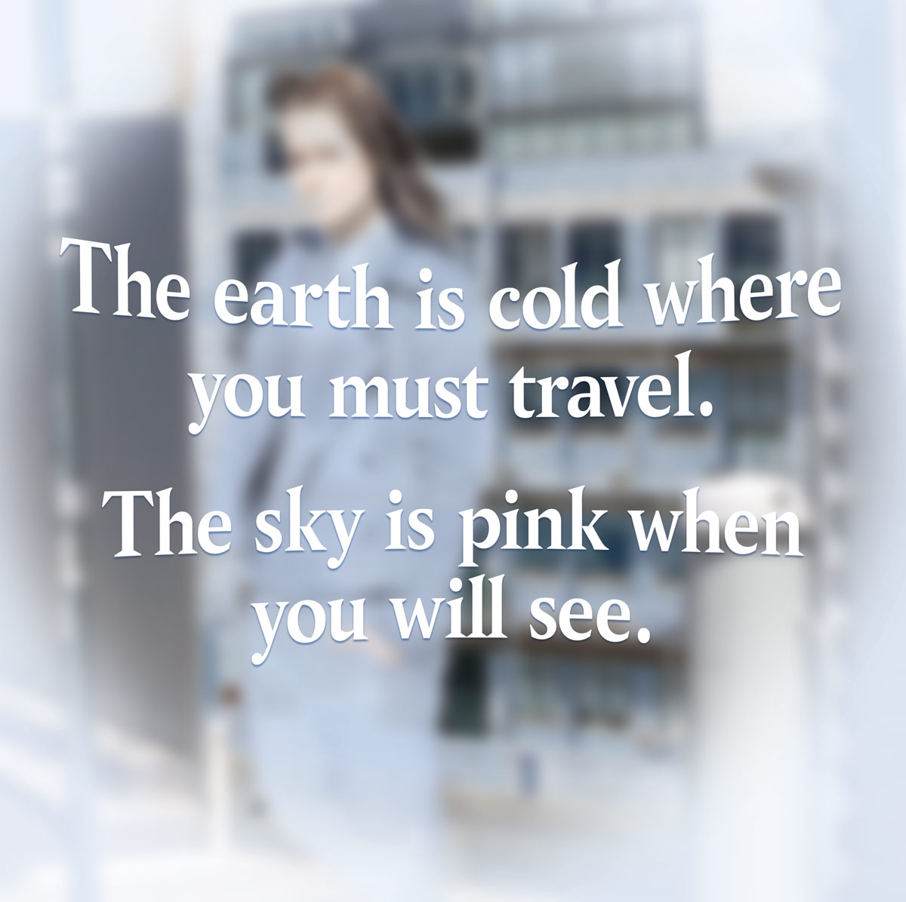

An exploration how theatre performance can utilise emerging augmented reality technology to create a more engaging and interactive user experience.
A street explortion, interactive, problem solving, choose your own adventure style (fk netflix...) theatre experience.
The devised story follows two young Huldufölk (Icelandic folklore creatures) in the human world. Léyna has been missing for quite some time and the elves are worried she has become trapped in the parallel human dimension. Finna—who is secretly in love with Léyna—volunteers to find her. Little does Finna know what Léyna has actually been up to.
To begin the experience users are given a cardboard AR viewer and a map. An app for viewing the AR performances will be installed onto the user’s smartphone. The map is used to journey to various locations in the nearby area that have been set up
for the performances.
From the outset of the experience, the user can choose to either follow the narrative from the perspective of Léyna or Finna—who will then become their narrator and leader through that particular storyline. This way, the user becomes an integral character within the narrative.
User answers and geolocation data will be used to load the particular performances for their custom experience.
AR technology facilitates the traditional theatre medium for storytelling to be taken from the stage and replicated elsewhere. Performances by actors
are pre-recorded, rendered in a virtual 3D space
and then super-positioned into the real world via a smartphone camera and screen. An upfront initial cost of talent aims to make the experience more affordable for the user compared to regular theatre.

Throughout the experience the user will be asked to make decisions and solve puzzles and riddles.